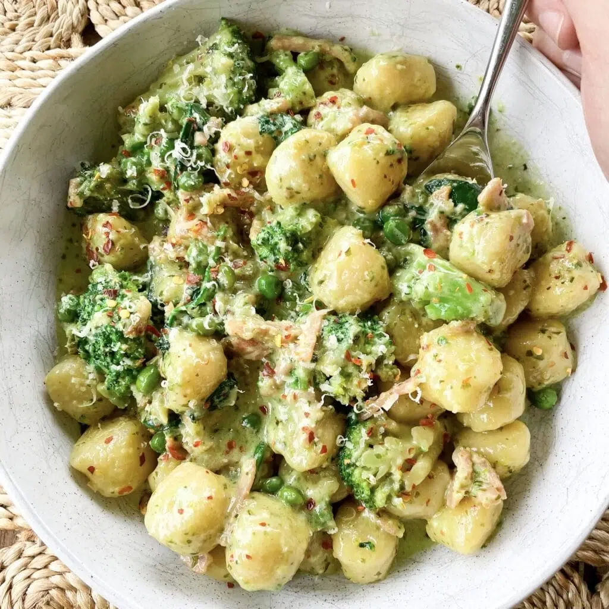

Gnocchi

Description
This creamy pesto gnocchi recipe is fried in spices to add extra flavour
Ingredients
- 500g fresh gnocchi
- 2 tsp pesto
- Olive oil
- Italian herbs and spices
- 300g diced pumpkin
- 200g diced sweet potato
- 250ml cooking cream
Steps
- Put the pumpkin and sweet potato on a tray and bake at 200C for 20min.
- Meanwhile, fry the gnocchi in a pan with a generous drizzle of olive oil until brown
- Add herbs & spices, garlic and fry until fragrant
- Add cream and mix well
- Stir in baked vegetables and serve